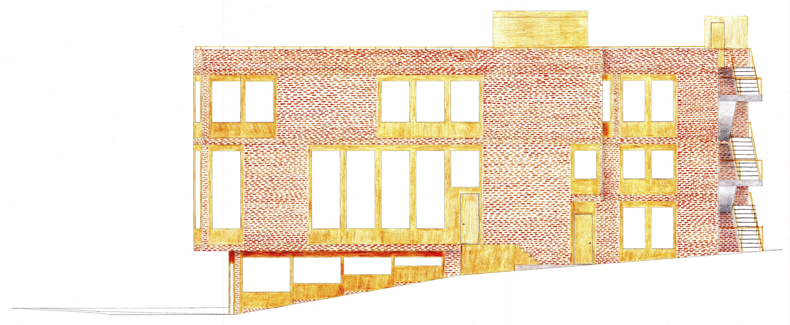
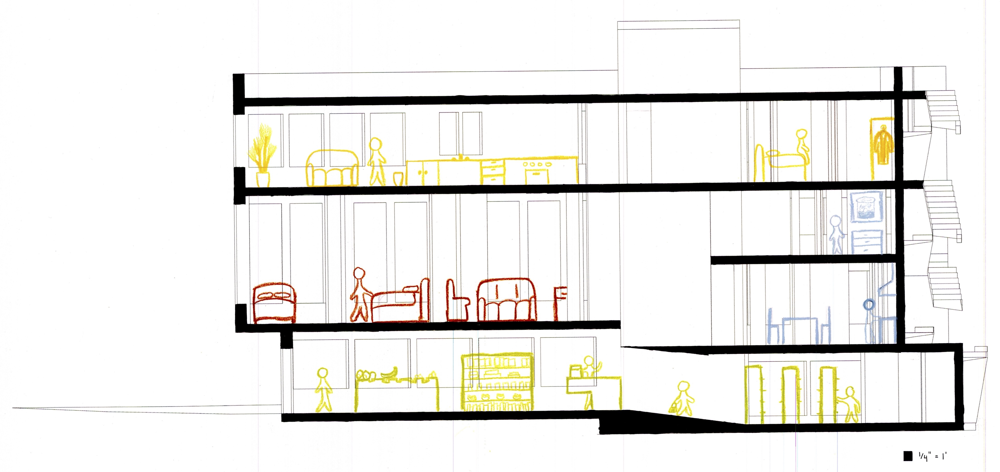
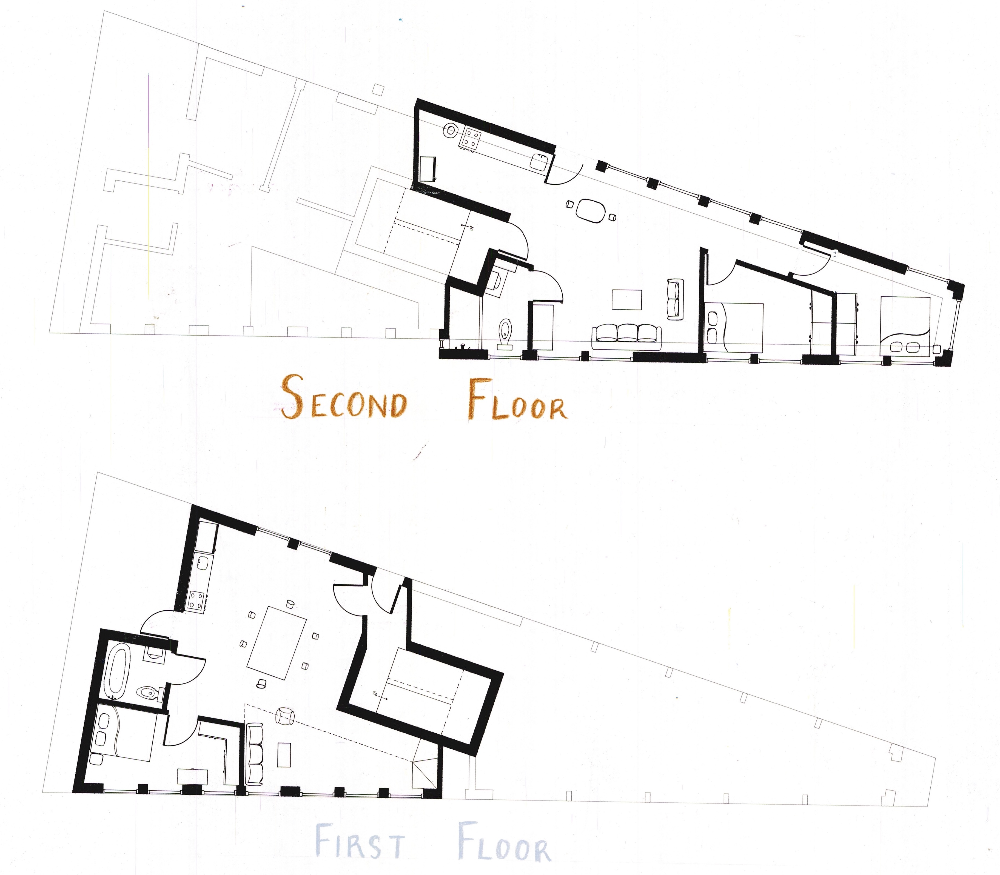

ELI HARRELL
Pittsburgh residential housing
a computer ~ 3D and hand ~ 2D project
The culmination of the class "Pittsburgh's Common Buildings." With Shivani Chatterji and Jasmina Scekic, chose
a site in Pittsburgh's South Side Slopes neighborhood. Currently, our site is empty save for a billboard, but
due to rising demand for housing in the area, we proposed this multi-family unit on that land.
click images to view them at full size.
| Viewed from the corner. To the right, the hill slopes up. To the left, it slopes down. Our building faces the street as a prow. |

|
| Viewed from the uphill slope. You might note the entrance to the second floor apartments via a small staircase parallel to the wall. The back second stairs are further right, between our building and the next unit along the block. |  |
| A section view from the same perspective. Here, you can see the split-level loft in the leftmost unit with the blue figures inside. Note also ADA-compliant ramp in the grocery store on the first floor that compensates for different floor heights in the front and back of the store. |  |
| Selected plan views. Thicker poché illustrates the different floor levels, while the thin lines indicate what is at the same level on the other side of the building at that level. Also, colors match with the section drawing above (reddish-orange for the front unit, blue-grey for the rear loft unit). |  |
| A screenshot from the Rhino model from which the linework necessary for our handmade drawings was derived. This allowed us to lean on what computers are good at (proportions and precise measurements), and what drawing by hand is good at (expressiveness and quick revisions). |

|